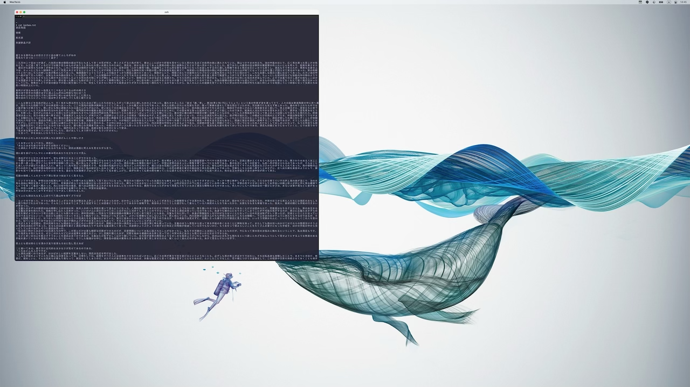
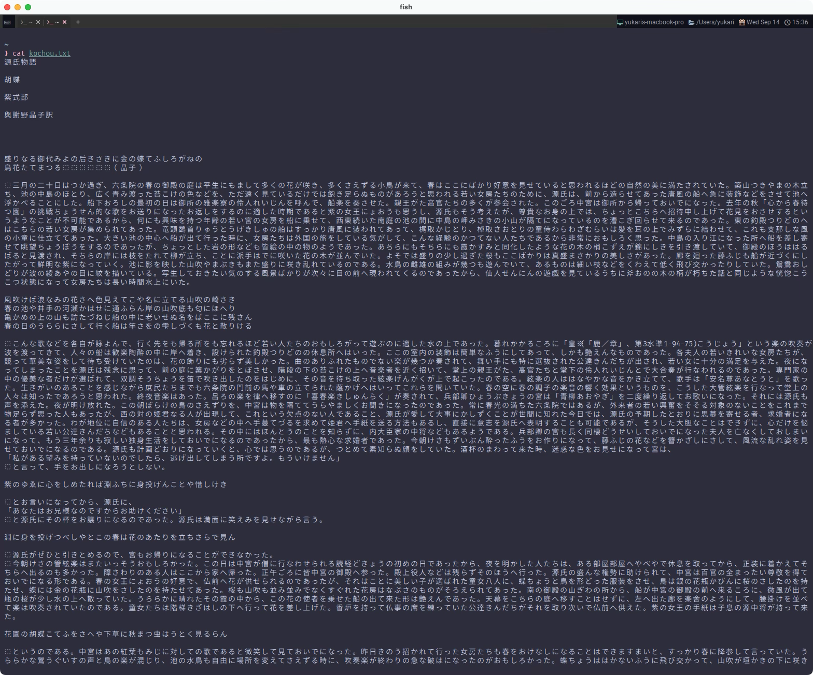
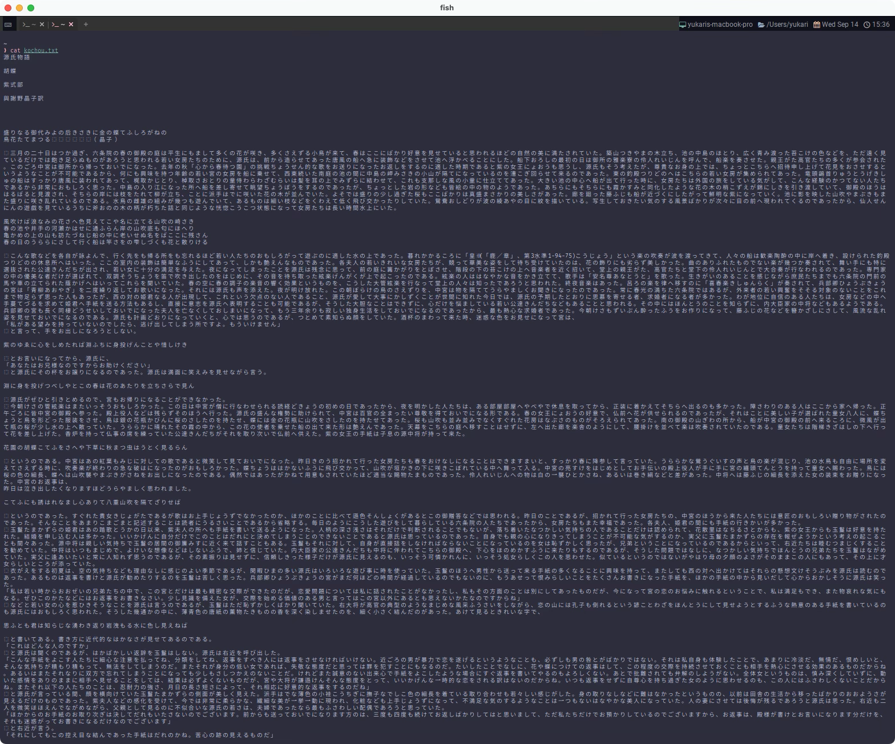

Toggle Font
ここではわたしが使っている機能実装を紹介します。
環境によっては全く必要ないと思いますので、その場合はスキップしてください。
まず前提
わたしのディスプレイ環境なんですが、MacBook と 4K を行ったり来たりして使っています。
だからなんだって言われるとキツイんですが、一番わかりやすいところでフォントサイズの問題があって、画面のスケールが違いすぎて 大きすぎたり小さすぎたりしてしまう...😢


DecreaseFontSize・ IncreaseFontSize を使ってサイズを上下するのもいいんですが、ちょっとコレじゃない...。
わたしはこれが結構ストレスになっていたので、 この問題の解消に有用なのが次のフォント切り替え機能です。
フォント切り替え
この例ではtoggle-font-sizeというイベントを独自に作っています。
フォントサイズに限らず、元の設定を直接変えるのではなく、オーバーライドする形式になっています。
Returns a copy of the current set of configuration overrides that is in effect for the window.
ウィンドウに適用されている設定オーバーライドの現在のセットのコピーを返します。
端的に言えば、オーバーライドされていない素の状態であれば、font_sizeを10.0でオーバーライドする。
オーバーライドされているのであれば、font_sizeをnilとしてオーバーライドを無効化する(14.0に戻される)。
local wezterm = require 'wezterm'
wezterm.on('toggle-font-size', function(window, pane)
local overrides = window:get_config_overrides() or {}
overrides.font_size = not overrides.font_size and 10.0 or nil
window:set_config_overrides(overrides)
end)
これでフォントサイズの切り替えが実現できます。
独自イベントが呼び出されるようにするにはEmitEventを用います。
This action causes the equivalent of wezterm.emit(name, window, pane) to be called in the context of the current pane.
このアクションは、現在のペインのコンテキストで wezterm.emit(name, window, pane) と同等のアクションが呼び出されるようにします。
今回はキーバインドctrl-fをトリガーとして呼び出します。
まあ、思いっきり手動なんですけどね。自動で出来たら面白いんですけどね。
素の状態: 1 
切り替えた状態: 
さらにフォントサイズを大きくして説明用に誇張しています。が、まだなんか中途半端でしたね。